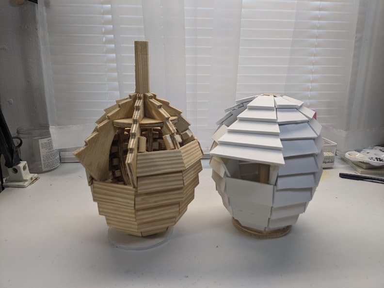
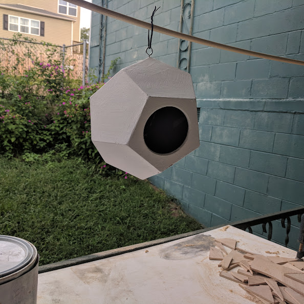

99 birdhouses
my ambition is to build 99 birdhouses, each different, inspired in a roundabout way by raymond queneau's "exercises in style". to date, i've only made a handful; i expect this will take decades.
birdhouse #5
wood, plywood
8-sided tapering shingled form, basically a pinecone. easily the most complicated thing i've ever made out of wood.
mid-construction photo with the foamcore maquette i made before i started making it out of wood
birdhouse #4
wood, plywood, acrylic (2022)
shingled box form - kind of a proof of concept for number 5. installed at the museum of infinite outcomes for avifauna #3 and currently on view there. i saw some straw sticking out of the opening the last time i was there; i think there are birds living in it now.
birdhouse #3
papier mache, quikcrete, reinforcing wire (2021)
hand-packed concrete around a papier mache form. looking for a place to install it.
birdhouse #2
wood (2020)
stacked poplar discs. installed at the hudgens center for the arts for brickworks gallery's three billion shown and then at the museum of infinite outcomes for avifauna #2. looking for a new place to install it.
birdhouse #1
plywood, acrylic, hot glue (2018)
dodecahedron thrown together after work one night as a goof and then later installed at the museum of infinite outcomes for the initial avifauna show. it turns out hot glue will slowly melt if left outside all summer - currently needs to be repaired / reassembled.
